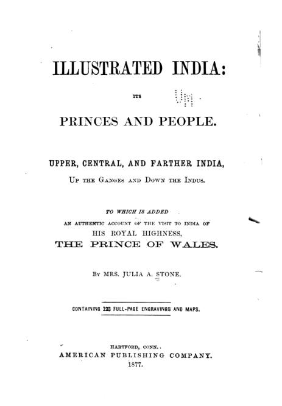
Illustrated India: Its Princes And People
ہ کتاب جولیا اے اسٹون کی لکھی ہوئی ہے، جو 1877 میں شائع ہوئی تھی۔ یہ بنیادی طور پر ایک تفصیلی سفرنامہ اور تاریخی دستاویز ہے۔ جس میں انہوں نے اپنے دورہ ہندوستان اور خاص طور پر 1875 اور 1876 کے دوران برطانوی ولی عہد پرنس آف ویلز کے دورہ ہند کے احوال قلم بند کیے ہیں۔
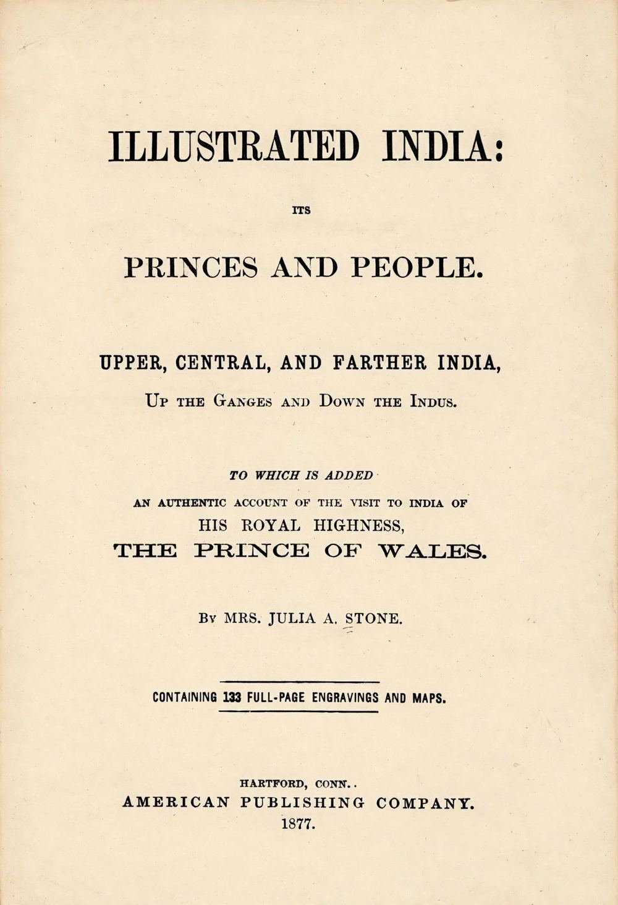
1
ILLUSTRATED INDIA: ITS PRINCES AND PEOPLE.
مصور ہندوستان: اس کے شہزادے اور لوگ۔

2
ILLINOAN PIRATE AND SAGHAI DYAK.
الینوان بحری ڈاکو اور ساگھائی دیاک۔
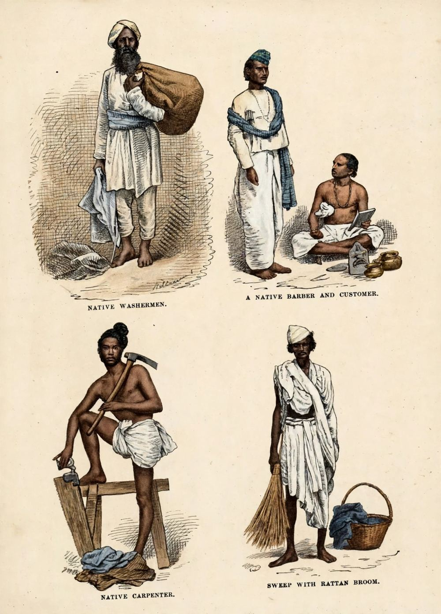
3
NATIVE WASHERMEN. A NATIVE BARBER AND CUSTOMER. NATIVE CARPENTER. SWEEP WITH RATTAN BROOM.
مقامی دھوبی۔ ایک مقامی حجام اور گاہک۔ مقامی بڑھئی۔ رتن کی جھاڑو والا خاکروب۔

4
A CATTLE-LIFTER.
مویشی اٹھانے والا شیر۔

5
HOUSE AND WOMEN OF BORNEO.
بورنیو کا گھر اور عورتیں۔
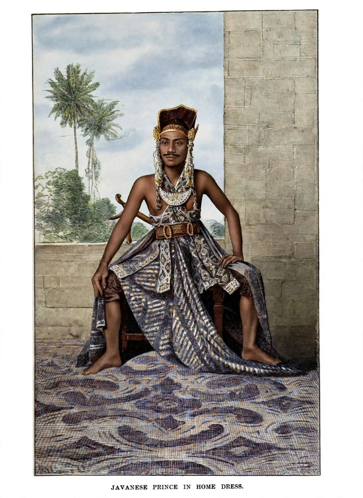
6
JAVANESE PRINCE IN HOME DRESS.
گھریلو لباس میں جاوا کا شہزادہ۔
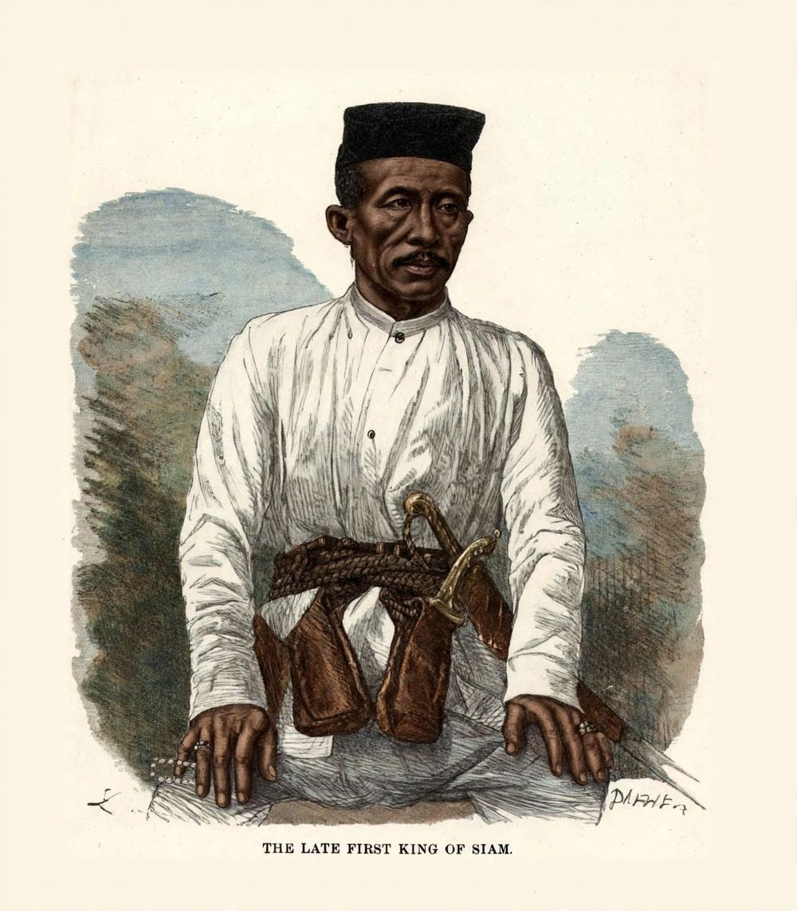
7
THE LATE FIRST KING OF SIAM.
سیام کا مرحوم پہلا بادشاہ۔

8
ENGLISH LIFE IN FARTHER INDIA.
دور دراز ہندوستان میں انگریزی زندگی۔

9
SURF BOAT AND BOATMEN, INDIA. WAITING FOR A HUSBAND.
ساحلی لہروں کی کشتی اور ملاح، بھارت۔ شوہر کا انتظار۔

10
EASTERN MACHINERY.
مشرقی مشینری۔

11
NATIVE BURMESE CARRIAGE.
مقامی برمی گاڑی۔
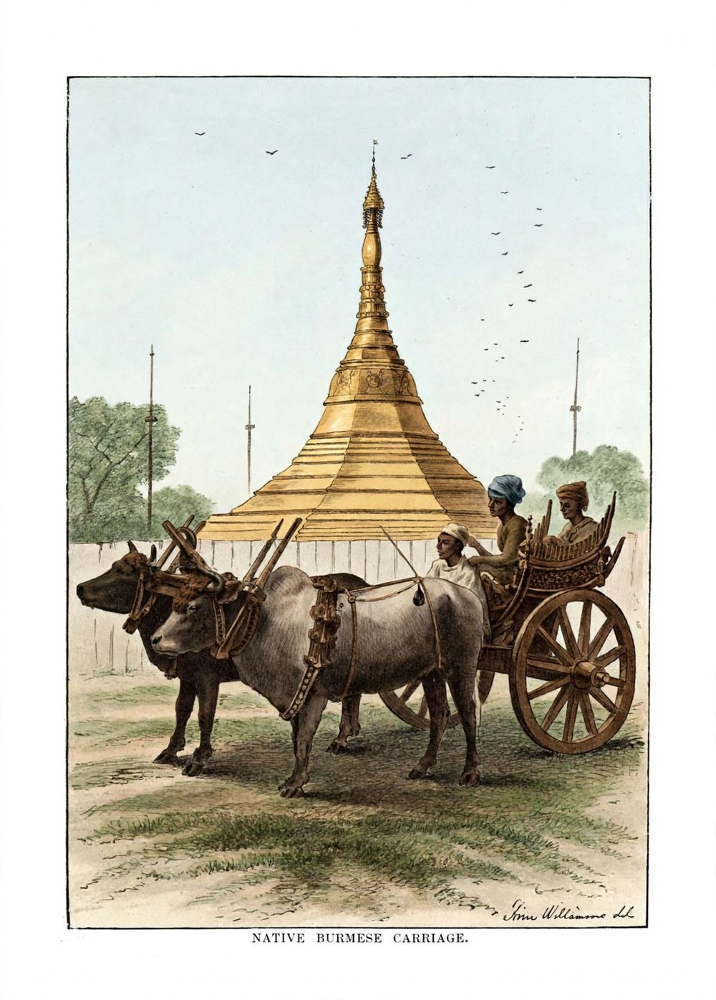
12
BUDDHIST PRIEST'S HOUSE AND SCHOOL.
بدھ بھکشو کا گھر اور اسکول۔

13
GATE IN THE PAGODA-WALL, RANGOON.
رنگون میں پگوڈا دیوار کا دروازہ۔

14
THE GREAT PAGODA AND SMALL TEMPLES, RANGOON, SHOWING THE TWO HUNDRED STONE STEPS LEADING TO THE SUMMIT.
رنگون کا عظیم پگوڈا اور چھوٹے مندر، چوٹی تک جانے والی دو سو پتھریلی سیڑھیاں۔

15
ROADSTEAD IN THE HOOGLY.
ہوگلی میں جہازوں کی لنگر گاہ۔
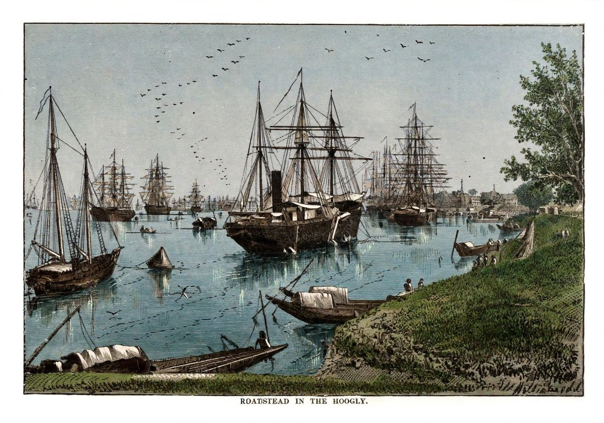
16
OLD COURT HOUSE STREET, DALHOUSIE SQUARE, CALCUTTA.
اولڈ کورٹ ہاؤس اسٹریٹ، ڈلہوزی اسکوائر، کلکتہ۔
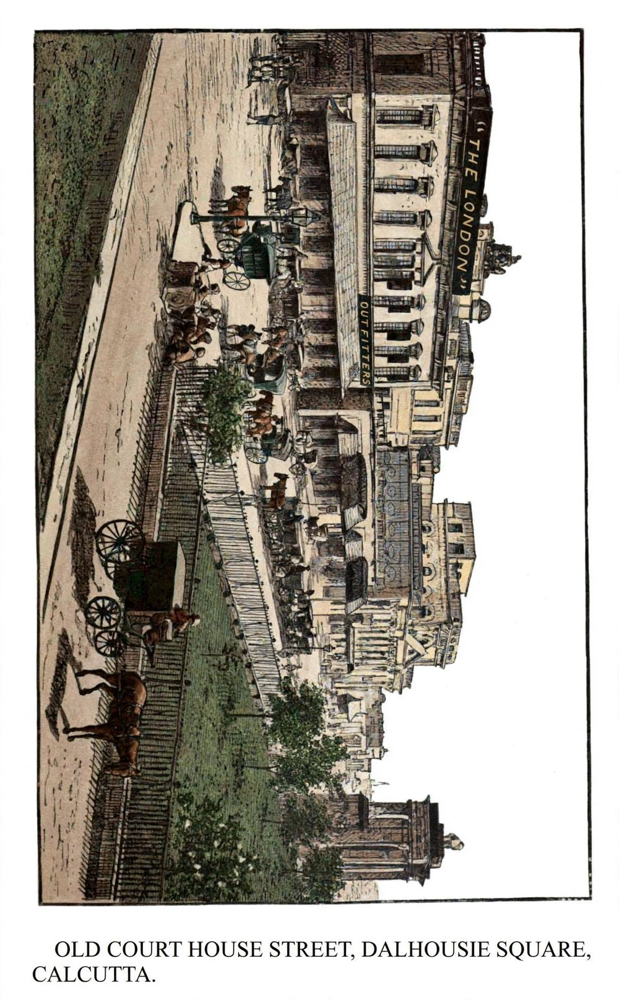
17
GATEWAY TO GOVERNOR GENERAL'S PALACE, CALCUTTA.
کلکتہ میں گورنر جنرل کے محل کا دروازہ۔
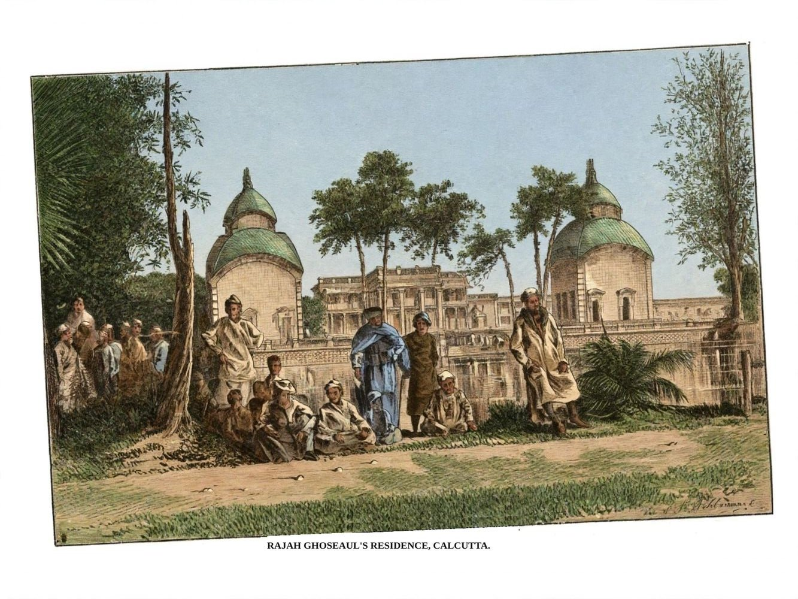
18
RAJAH GHOSEAUL'S RESIDENCE, CALCUTTA.
کلکتہ میں راجہ گھوسال کی رہائش گاہ۔

19
The only Single Lady at the Station. THE ONLY UNMARRIED LADY IN TOWN. TRUE HISTORY OF NOOR-MAHAL.
شہر کی واحد غیر شادی شدہ خاتون۔ نور محل کی سچی تاریخ۔
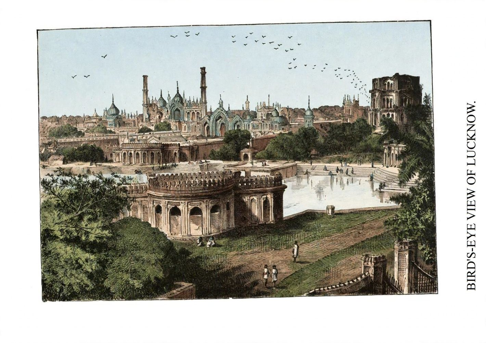
20
BIRD'S-EYE VIEW OF LUCKNOW.
لکھنؤ کا فضائی منظر۔

21
THE MEMORIAL IN THE GARDEN AT CAWNPORE. SLAUGHTER OF THE INNOCENTS.
کانپور کے باغ میں یادگار۔ معصوموں کا قتل۔
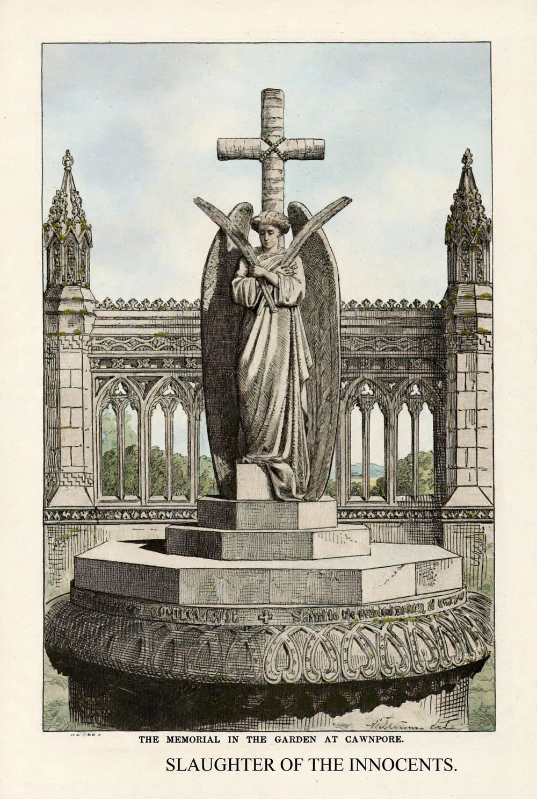
22
THE CHUTTER MUNZIL AND FURBUD DUX PALACES.
چھتر منزل اور فرحت بخش محل۔

23
THE HOSEINBAD EMAMBARRA AND GARDEN, LUCKNOW. THE THRONE-ROOM.
لکھنؤ کا حسین آباد امام بارہ اور باغ۔ تخت والا کمرہ۔

24
GATE OF THE HOSEINABAD EMAMBARRA.
حسین آباد امام بارے کا دروازہ۔

25
MODEL OF THE TAJ, IN GARDEN OF THE HOSEINABAD. PRINCELY ENTERTAINMENTS.
حسین آباد کے باغ میں تاج کا نمونہ۔ شاہی تفریحات۔
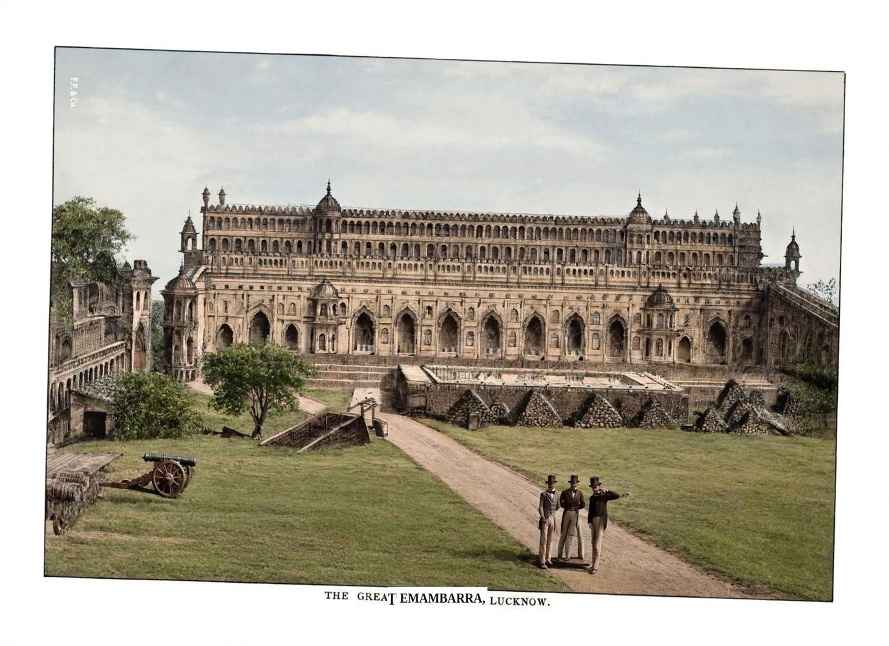
26
THE GREAT EMAMBARRA, LUCKNOW.
لکھنؤ کا بڑا امام بارہ۔

27
A native being treated for a sore eye. Natives mending the roof of the Viranda. NATIVE LIFE IN INDIA. AN ANCIENT FORT.
دکھتی آنکھ کا علاج کرواتا مقامی آدمی۔ برآمدے کی چھت کی مرمت کرتے مقامی لوگ۔ بھارت میں مقامی زندگی۔ ایک قدیم قلعہ۔

28
PROCESSION OF NATIVE CHIEFS. A GREAT CONTRAST.
مقامی سرداروں کا جلوس

29
THE JUMMA MUSJID, AGRA. THE JUMMAH MUSJID.
آگرہ کی جامع مسجد

30
GATEWAY TO THE TAJ, AGRA.
آگرہ میں تاج محل کا دروازہ

31
GARDEN-VIEW OF THE TAJ, AGRA.
آگرہ میں تاج محل کا باغ سے منظر

32
THE TAJ MAHAL, AGRA. TOMBS OF EMPEROR AND EMPRESS.
آگرہ کا تاج محل
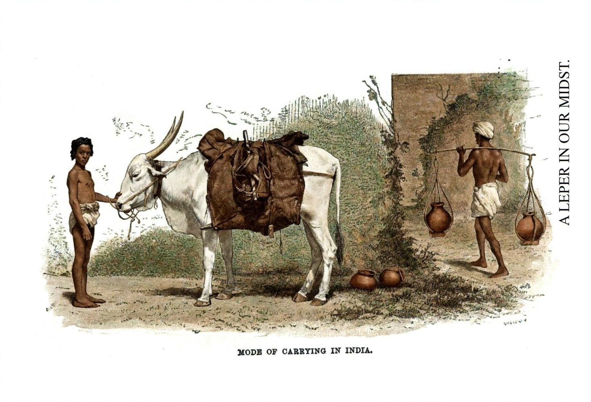
33
MODE OF CARRYING IN INDIA. A LEPER IN OUR MIDST.
ہندوستان میں سامان اٹھانے کا طریقہ
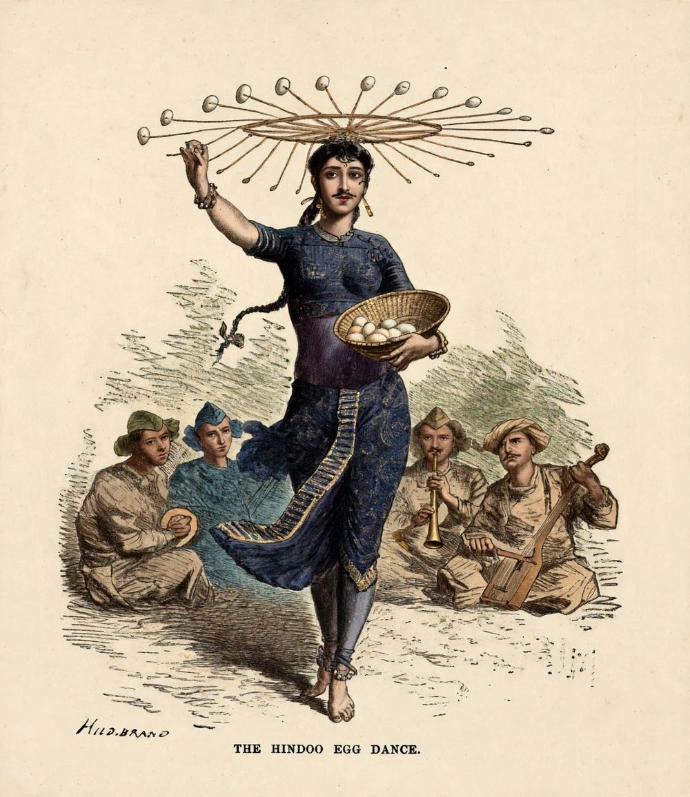
34
THE HINDOO EGG DANCE.
ہندو انڈا رقص

35
CITADEL, PALACE, AND GATE OF THE JUMMAH MUSJID
جامع مسجد کا قلعہ، محل اور دروازہ
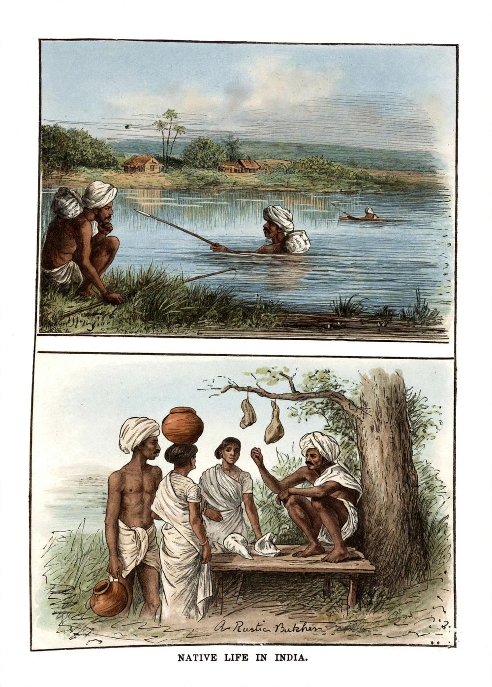
36
A Rustic Butcher. NATIVE LIFE IN INDIA.
ہندوستان میں مقامی زندگی

37
ENGLISH LIFE IN INDIA.
ہندوستان میں انگریزوں کی زندگی

38
AN IMPERIAL PROCESSION.
شاہی جلوس
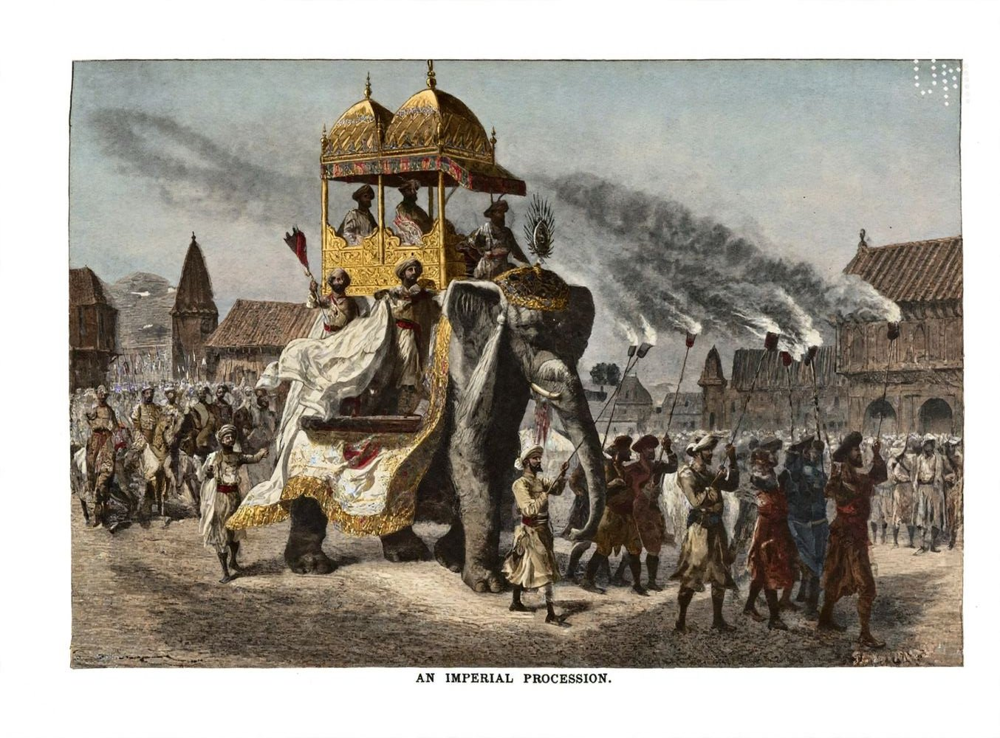
39
THE MOTEE MUSJID, DELHI.
دہلی کی موتی مسجد
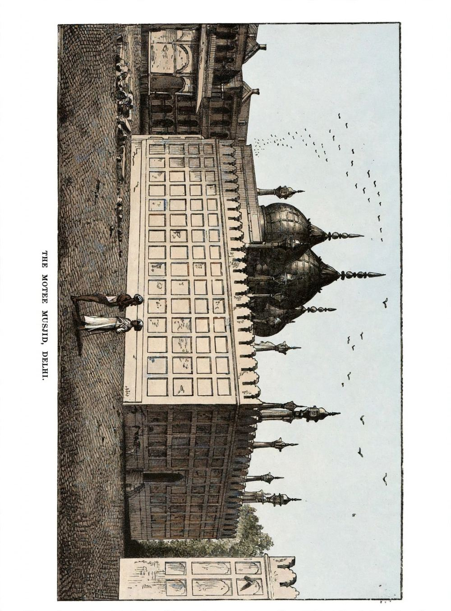
40
ENGLISH LIFE IN INDIA.
ہندوستان میں انگریزوں کی زندگی
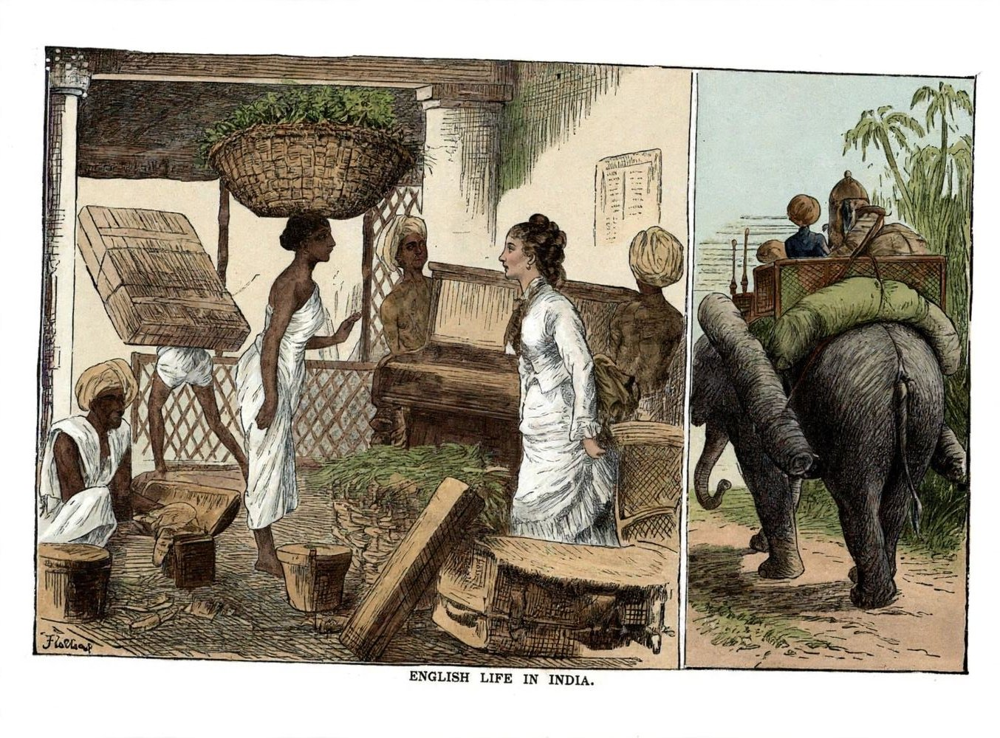
41
RUINS OF OLD DELHI.
پرانی دہلی کے کھنڈر

42
NIZAM-OO-DEEN'S TOMB, OLD DELHI. AT LEFT HAND IS SEEN THE TOMB OF MOHAMED SHAH.
پرانی دہلی میں نظام الدین کا مقبرہ، بائیں طرف محمد شاہ کا مقبرہ نظر آتا ہے

43
TOMB OF SUFTUN JUNG. VIZIER OF MAHOMED SHAH. DELHI.
دہلی میں محمد شاہ کے وزیر صفدر جنگ کا مقبرہ

44
GREAT ARCH AND IRON PILLAR, OLD DELHI.
پرانی دہلی کی بڑی محراب اور لوہے کا ستون
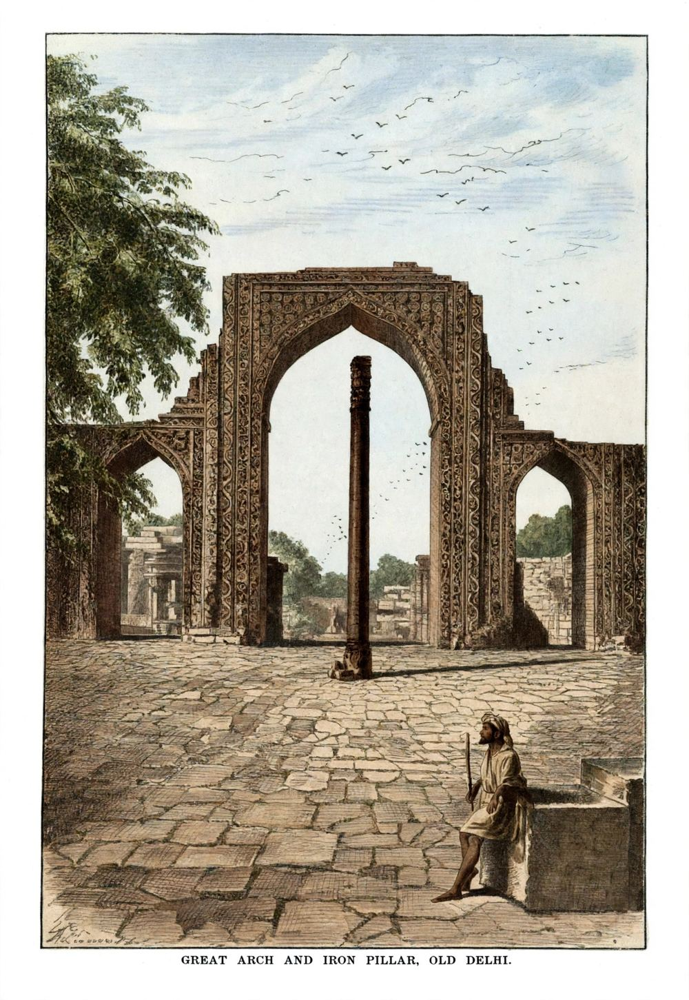
45
KOOTUB MINAR, AND DOME OF ALBA-OO-DEEN GATEWAY.
قطب مینار اور علاء الدین کے دروازے کا گنبد

46
MAHARAJAH RUNGEET SINGH. LAKE OF IMMORTALITY, LAHORE.
مہاراجہ رنجیت سنگھ۔ لاہور کی ابدی زندگی کی جھیل

47
TOMB OF RUNGEET SINGH.
رنجیت سنگھ کا مقبرہ
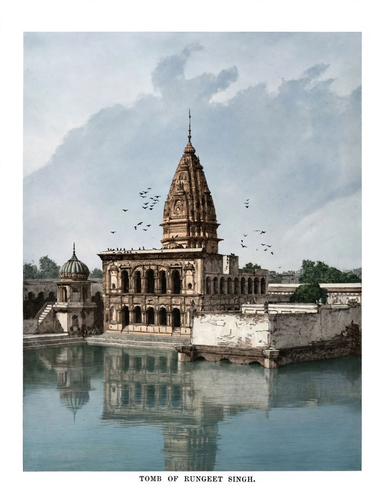
48
A TABLE SERVANT. A HINDOO PERFORMER. THE YOUNG RAJAH.
دسترخوان کا ملازم، ہندو اداکار، نوجوان راجہ
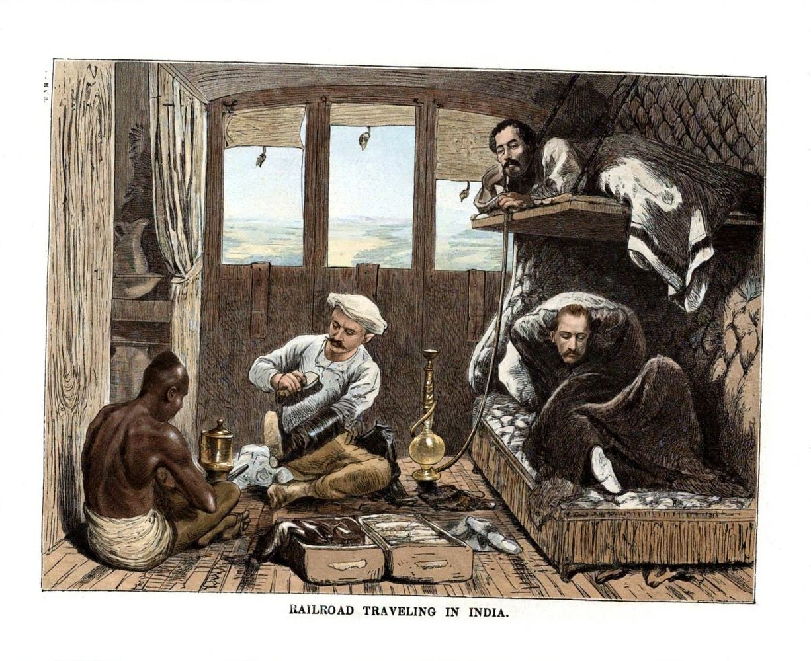
49
RAILROAD TRAVELING IN INDIA.
ہندوستان میں ریل کا سفر

50
HOW THE CAPTAINS HAD TO WAIT. SCENE ON THE INDUS, SUNSET.
کپتانوں کو کیسے انتظار کرنا پڑا۔ دریائے سندھ پر غروب آفتاب کا منظر

51
HINDOO GIRL.
ہندو لڑکی

52
PARSEE LADY AND DAUGHTER.
پارسی خاتون اور اس کی بیٹی

53
SILVER THRONE MADE FOR THE USE OF THE PRINCE OF WALES IN INDIA.
ہندوستان میں شہزادہ ویلز کے استعمال کے لیے بنایا گیا چاندی کا تخت

54
THE CITY OF LAHORE.
لاہور کا شہر
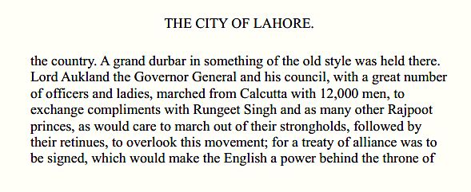
55
LAHORE. THE FORT OR CITADEL OF LAHORE.
لاہور۔ لاہور کا قلعہ یا گڑھ

56
MOSQUE AND GARDEN.
مسجد اور باغ

57
TOMB OF NOOR MAHAL.
نور محل کا مقبرہ

58
SELIM AND NOOR MAHAL. THE CURSE OF ALLAH.
سلیم اور نور محل، اللہ کی لعنت
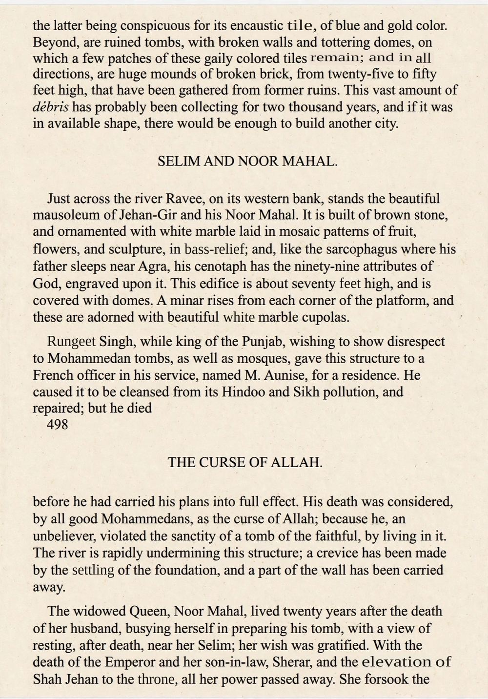
59
MOSQUE OF VIZIER KHAN.
وزیر خان کی مسجد

60
MISSION COLLEGE.
مشن کالج

61
کتاب کا صفحہ جس میں لاہور کے نارمل سکول، طلبہ کی نشست اور اساتذہ کی تنخواہ کا بیان ہے۔
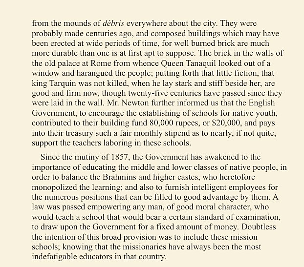
62
کتاب کا صفحہ جس میں پرانی اینٹوں، روم کے محل اور 1857 کے بعد تعلیم کی اہمیت کا ذکر ہے۔

63
THE SHALIMAR GARDENS.
شالیمار باغات
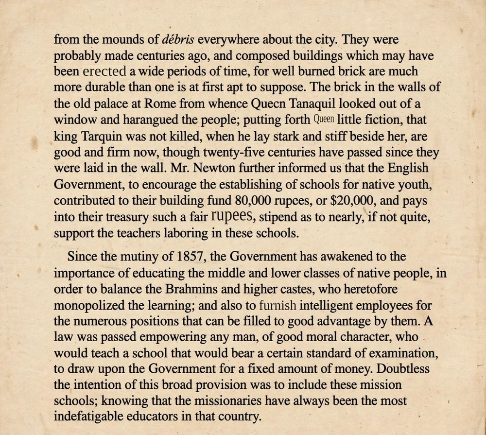
64
A MODERN RESORT.
ایک جدید تفریح گاہ

65
کتاب کا صفحہ جس میں شالیمار باغ کے تفریحی استعمال اور لاہور کے کھنڈرات کا بیان ہے۔
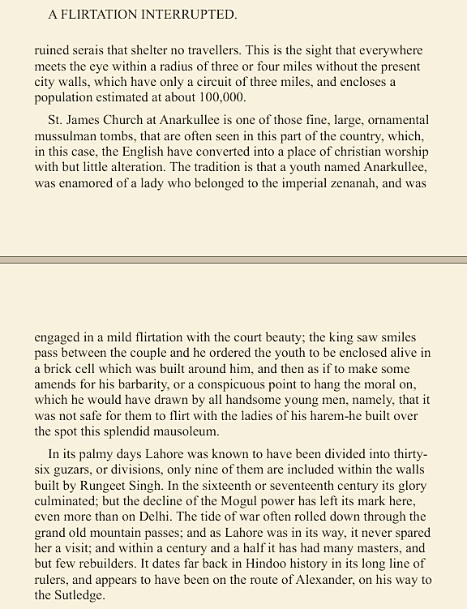
66
A FLIRTATION INTERRUPTED.
رک جانے والی چھیڑ چھاڑ

67
کتاب کا صفحہ جس میں محمود غزنوی کے لاہور پر قبضے اور دارالحکومت کی منتقلی کا بیان ہے۔

68
کتاب کا صفحہ جس میں اکبر کی مذہبی رواداری، لاہور کے قلعے اور ریل کے سفر کا ذکر ہے۔

69
کتاب کا صفحہ جس میں ریل کے سفر، خشک زمین اور سندھ کے صحرا میں پناہ گاہوں کا بیان ہے۔

70
SCARCITY OF GRASS.
گھاس کی قلت

71
کتاب کا صفحہ جس میں ملتان میں گھاس کی کمی اور لمبی سرکنڈوں والی گھاس کا بیان ہے۔
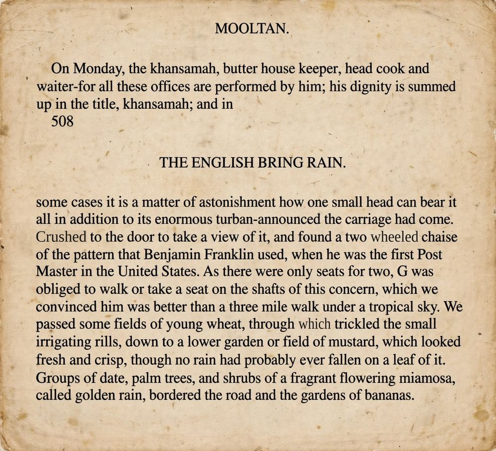
72
MOOLTAN. THE ENGLISH BRING RAIN.
ملتان، انگریز بارش لاتے ہیں

73
TOMB OF A FIRE-WORSHIPPER.
آتش پرست کا مقبرہ

74
کتاب کا صفحہ جس میں ملتان کے قلعے کی دیواروں کے سیلاب سے گرنے کا ذکر ہے۔
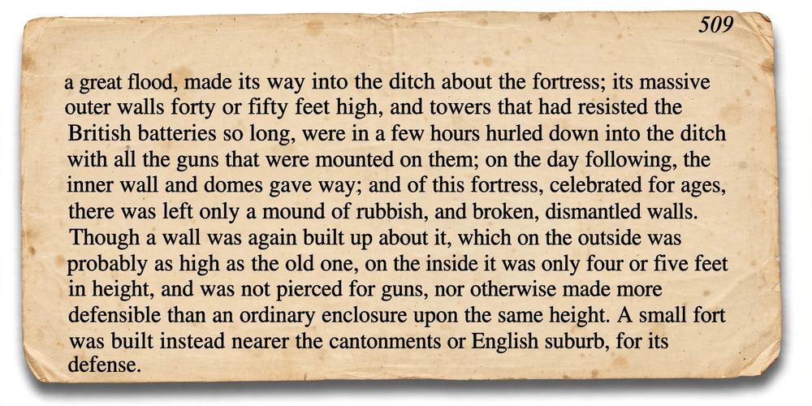
75
THE OLD SHRINE AND ITS LEGEND.
پرانا مزار اور اس کی داستان
76
ENGLISH MONUMENTS.
انگریزوں کی یادگاریں
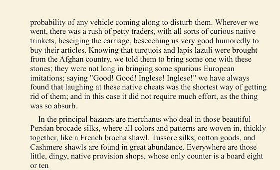
77
کتاب کا صفحہ جس میں ملتان کے بازاروں، چھوٹے تاجروں اور ریشمی کپڑوں کا بیان ہے۔

78
کتاب کا صفحہ جس میں ملتان کی چھوٹی دکانوں اور شہر کے گرد کھنڈرات کا ذکر ہے۔
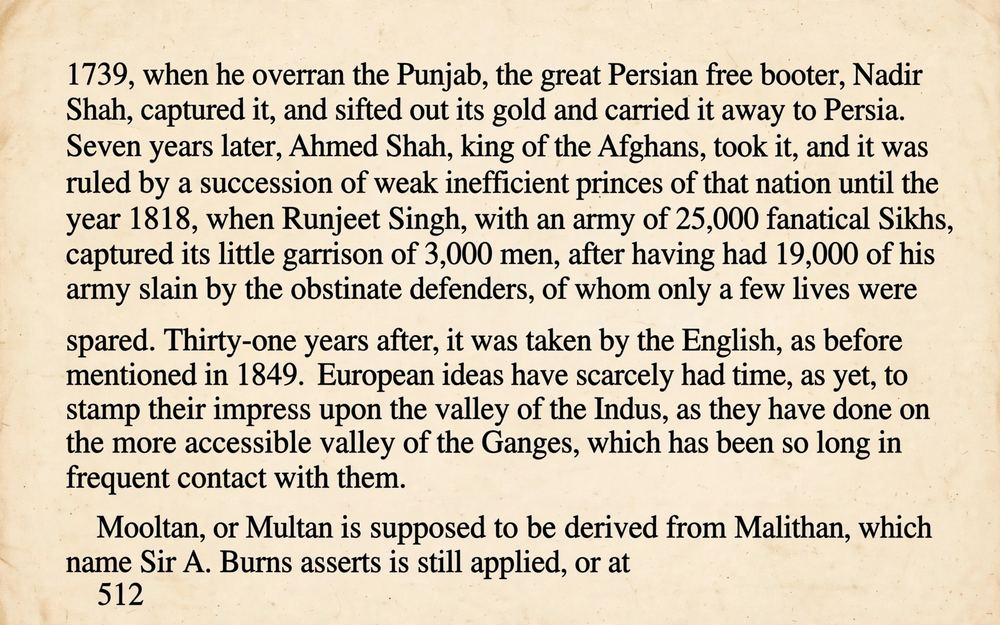
79
کتاب کا صفحہ جس میں نادر شاہ، احمد شاہ اور رنجیت سنگھ کے ملتان پر قبضے کی تاریخ ہے۔

80
ALEXANDER'S SAIL DOWN THE INDUS.
سکندر کا دریائے سندھ میں سفر

81
کتاب کا صفحہ جس میں محمد بن قاسم، محمود غزنوی اور تیمور کے ملتان پر قبضے کا ذکر ہے۔

82
DOWN THE INDUS. / STEAMBOATING ON THE INDUS.
دریائے سندھ کے ساتھ نیچے کی طرف / دریائے سندھ میں بھاپ کے جہاز کا سفر

83
کتاب کے متن کا صفحہ جس میں سندھ کے بھاپ کے جہازوں اور دریائے سندھ و چناب کے کم گہرے پانی کا بیان ہے

84
کتاب کے متن کا صفحہ جس میں دریا کے کناروں کی جھاڑیوں، گیدڑوں، لکڑ بگھوں اور مگرمچھوں کا ذکر ہے

85
کتاب کے متن کا صفحہ جس میں افغان کے نماز اور مچھلی پکڑنے اور مسافروں کی گفتگو کا ذکر ہے

86
ON A SAND-BAR.
ریت کے ٹیلے پر پھنسنا

87
کتاب کے متن کا صفحہ جس میں مقامی کشتیوں اور دریائے سندھ کی وادی کے نیل سے موازنے کا ذکر ہے

88
FEMALE CAMEL DRIVER.
خاتون اونٹ ہانکنے والی

89
THE CITY OF KHYRPOOR.
خیرپور کا شہر

90
SUCKKUR.
سکھر

91
THE TWO MAMELUKE SLAVES.
دو مملوک غلام
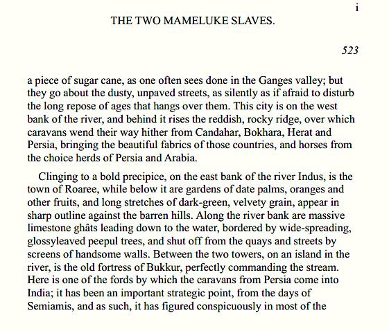
92
BUILDING THE KUTUB MINAR.
قطب مینار کی تعمیر
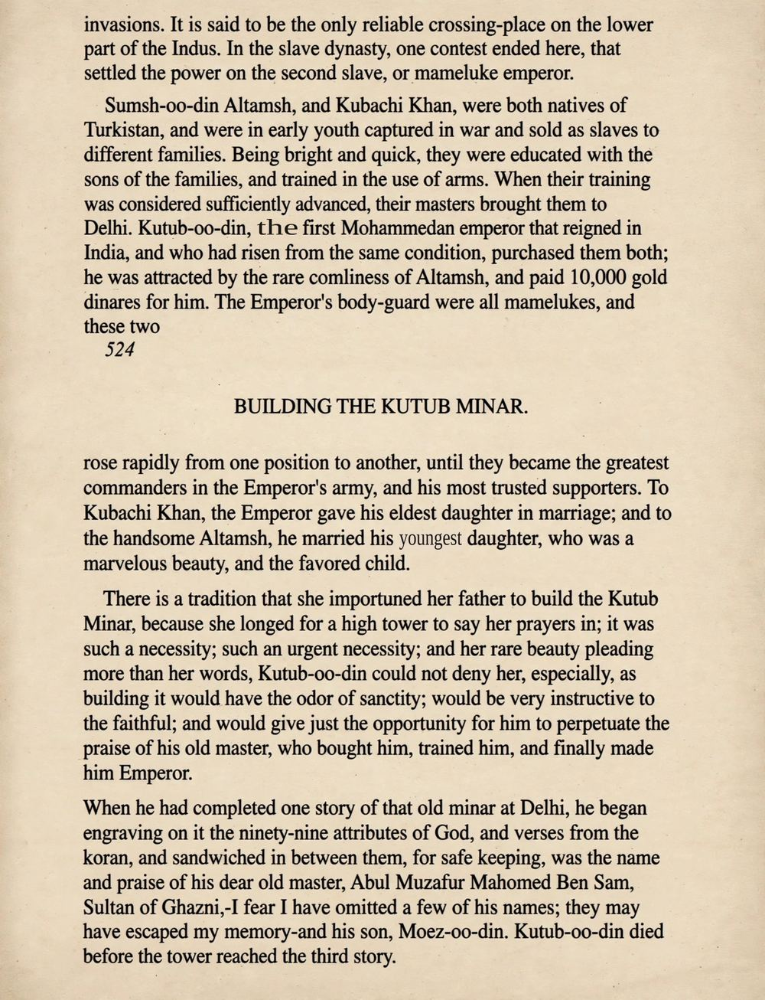
93
THE PALACE AND THE TOMB.
محل اور مقبرہ

94
کتاب کے متن کا صفحہ جس میں قباجی خان کی موت اور سکھر کے پرانے میناروں کا بیان ہے

95
HINDOO WORSHIP AT THE GHATS.
گھاٹوں پر ہندوؤں کی عبادت

96
KOTRE AND HYDERABAD. / CITY AND FORTRESS OF HYDERABAD.
کوٹری اور حیدرآباد / حیدرآباد کا شہر اور قلعہ
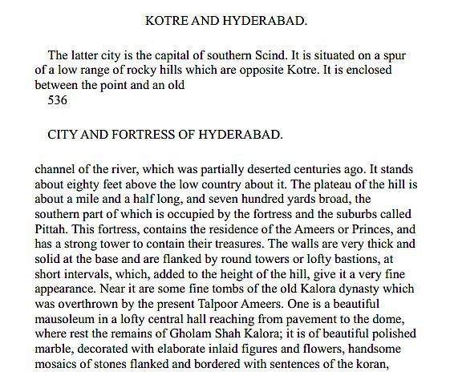
97
TERMINI OF R. R. AND STEAMBOAT NAVIGATION.
ریلوے اور بھاپ کے جہاز کی آمد و رفت کا آخری مقام

98
کتاب کے متن کا صفحہ جس میں قدیم شہروں کی تاریخ اور کوٹری کی تجارتی اہمیت کا بیان ہے

99
کتاب کے متن کا صفحہ جس میں کوٹری کے بندرگاہ، گھاٹوں اور دریائے سندھ سے رخصتی کا ذکر ہے

100
SOIL AND PRODUCTIONS.
مٹی اور پیداوار

101
KURRACHEE.
کراچی
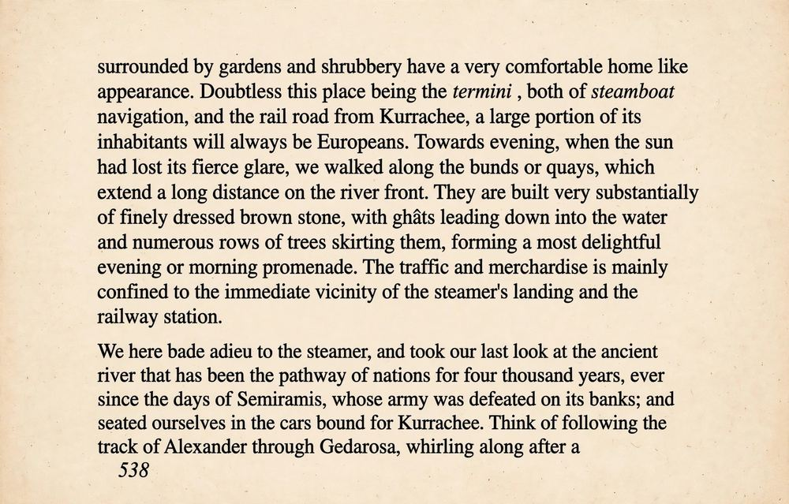
102
کتاب کے متن کا صفحہ جس میں کراچی کے ہوٹل، پانی کی کمی اور سفید دھول کا بیان ہے

103
BUSINESS AND SOCIETY OF THE CITY.
شہر کا کاروبار اور معاشرہ
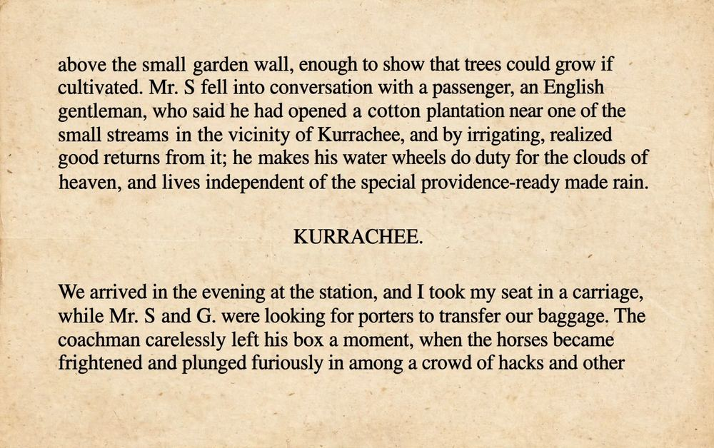
104
GOING ON BOARD.
جہاز پر سوار ہونا

105
FAMILY PARTINGS.
خاندانوں کی جدائیاں
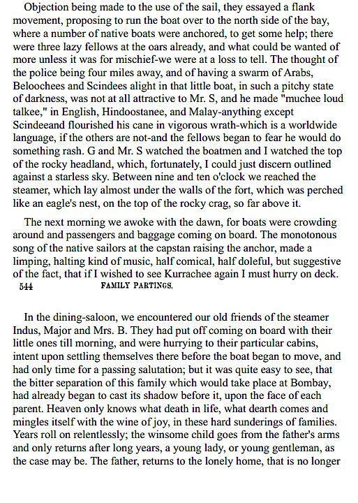
106
THE NEW SENSATION.
نئی سنسنی

107
AT BOMBAY.
بمبئی میں

108
کتاب کے متن کا آخری صفحہ جس میں بمبئی کی بندرگاہ میں لنگر انداز ہونے کا بیان ہے